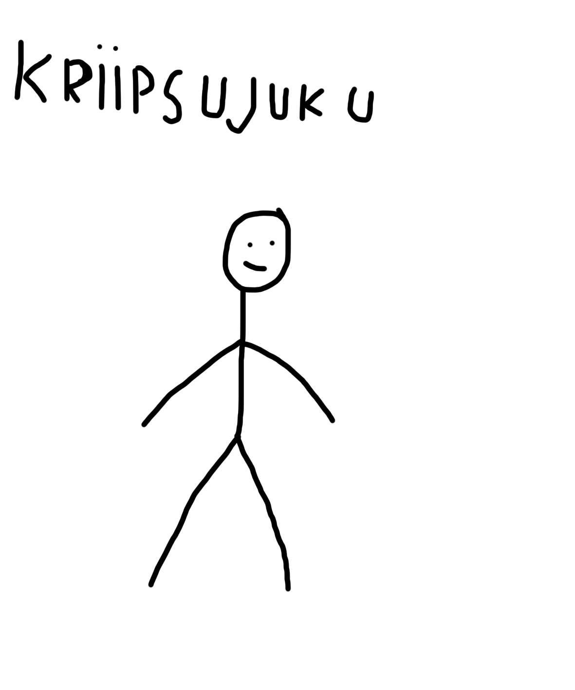

Adobe Animate on multimeediarakendus, mida kasutatakse interaktiivsete animatsioonide ja
vektorgraafika loomiseks veebilehtedele, mängudele ja rakendustele. See võimaldab
kasutajatel luua animatsioone, mis töötavad erinevates seadmetes ja platvormidel.
Lühike script animatsiooni jaoks, ning photoshopis skriptis olevate tegelaste kohta sketch.
| Sketch | |
|  | Skript |
Renderdatud animatsioon videoks ja lisatud heliefektidega.